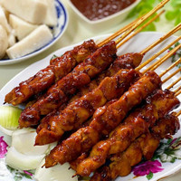

Welcome to the restaurant!
Asian Restaurant offers authentic and delicious tasting Sate in Jakarta, CT. Asian Restaurant's convenient location and affordable prices make our restaurant a natural choice for dine-in, take-out meals in the Middletown community. Our restaurant is known for its variety in taste and high quality fresh ingredients.

Sate Ayam
Bird Satay, the satay is made from gizzard, liver, and intestines of burung ayam-ayaman (watercock). After being seasoned with mild spices and stuck on a skewer
Sate Ayam
This is a dish
Sate Ayam
This is a dish